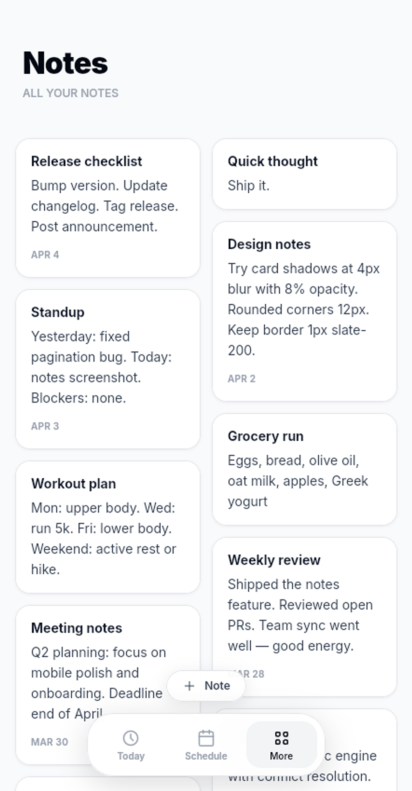

Tasks · Events · Habits
Your day, unmessed.
WhenSpace™ brings your tasks, events, and habits into a single calm space — no clutter, no overwhelm. Just clarity on what matters today.
See more ↓
Tasks · Events · Habits
WhenSpace™ brings your tasks, events, and habits into a single calm space — no clutter, no overwhelm. Just clarity on what matters today.
See more ↓

Tasks
Some things need steps. Some need checklists. Some just need a day. Tasks in WhenSpace adapt to the work — break a project into ordered steps, track every item on a list, or park an idea with no date until you're ready for it.
Plan
Switch between week and month view to get the perspective you need. Events sit alongside tasks so you always know what's on, and reminders make sure you're never caught off guard.


Habits
Track time, count reps, or simply check in. Habits show their full history as a dot grid — every window you completed, every one you missed. Your streak grows in real time, and your target tells you when the habit has truly taken hold.
Notes
Keep notes right alongside your tasks — no separate app needed. Meeting takeaways, quick thoughts, grocery lists, design decisions. One tap to capture, always there when you need them.


Mastered
When your streak hits the target, the habit graduates. WhenSpace checks in now and then — still doing it? Confirm and move on. The longer the habit holds, the less it needs your attention. Lapsed? A short re-establishment series gets you back on track.
One place for tasks, events, and habits is almost here.
Offline-first and private by design — your data stays on your device.